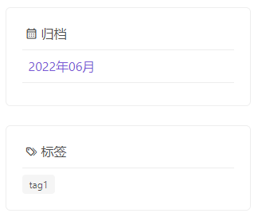

实现侧边栏文章归档及标签
按照正常的博客网站布局，一般都会存在侧边栏，侧边栏比较常见的几个模块分别是 搜索、最新文章、文章归档、标签等！该教程会带大家实现这四个模块！
按照当前项目的布局，我们的侧边栏仅在blog应用中的页面展示，也就是博客的列列表页和详情页展示，那么这个视图是通过blog中的蓝图绑定的，因此我们在左侧边栏的时候只需要针对这个应用即可！
- 最终的效果

实现文章归档功能
在app/blog/views.py中通过博客的蓝图注入上下文,代码如下
@bp.context_processor
def inject_archive():
# 文章归档日期注入上下文
posts = Post.query.order_by(Post.add_date)
dates = set([post.add_date.strftime("%Y年%m月") for post in posts])
# 标签
tags = Tag.query.all()
for tag in tags:
tag.style = ['is-success', 'is-danger', 'is-black', 'is-light', 'is-primary', 'is-link', 'is-info', 'is-warning']
return dict(dates=dates, tags=tags)
首先我们这里选择按月归档的方式，也就是把每个月的文章归类到一起，那么我们就必须先把年月查询显示到侧边栏，代码如下：
posts = Post.query.order_by(Post.add_date)
dates = set([post.add_date.strftime("%Y年%m月") for post in posts])
首先查询出所有的文章并按照发布时间倒叙排列，也就是最新发布的文章在最前边，之后再提取出每篇文章的发布日期的年月，使用strftime方法格式化成我们需要的格式，并使用set简单去重，并返回到上下文！
实现文章归档的详情视图
@bp.route('/category/<string:date>')
def archive(date):
# 归档页
import re
# 正则匹配年月
regex = re.compile(r'\d{4}|\d{2}')
dates = regex.findall(date)
from sqlalchemy import extract, and_, or_
page = request.args.get('page', 1, type=int)
# 根据年月获取数据
archive_posts = Post.query.filter(and_(extract('year', Post.add_date) == int(dates[0]), extract('month', Post.add_date) == int(dates[1])))
# 对数据进行分页
pagination = archive_posts.paginate(page, per_page=10, error_out=False)
return render_template('archive.html', post_list=pagination.items, pagination=pagination, date=date)
详情视图我们通过url传递进来要访问的日期，并通过正则表达式提取出年和月,代码如下：
import re
# 正则匹配年月
regex = re.compile(r'\d{4}|\d{2}')
dates = regex.findall(date)
下边这段代码引入了sqlalchemy提供extract, and_两个方法，extract用来提取某个字段的值，and_实现两个并且的关系，然后根据正则获取的 年月匹配查询出当月的文章！
from sqlalchemy import extract, and_, or_
archive_posts = Post.query.filter(and_(extract('year', Post.add_date) == int(dates[0]), extract('month', Post.add_date) == int(dates[1])))
其他代码都是在之前的章节中多次使用，大家自行理解！
创建归档页模板，在app/blog/templates/中创建archive.html,代码如下：
{% extends 'cate_list.html' %}
{% block title %}{{ date }}的文章归档 {% endblock title %}
{% block hero %}{% endblock hero %}
{% block breadcrumb %}
<nav class="breadcrumb is-small" aria-label="breadcrumbs">
<ul>
<li><a href="/">首页</a></li>
<li class="is-active"><a href="#" aria-current="page">{{ date }}的归档</a></li>
</ul>
</nav>
{% endblock breadcrumb %}
{% block pagination %}
<nav class="pagination is-small" role="navigation" aria-label="pagination">
{% if pagination.has_prev %}
<a href="{{ url_for('blog.archive', date=date ) }}?page={{ pagination.prev_num }}" class="pagination-previous" title="This is the first page">Previous</a>
{% endif %}
{% if pagination.has_next %}
<a href="{{ url_for('blog.archive', date=date) }}?page={{ pagination.next_num }}" class="pagination-next">Next page</a>
{% endif %}
<ul class="pagination-list">
{% for page in pagination.iter_pages() %}
{% if page %}
{% if page != pagination.page %}
<li>
<a href="{{ url_for('blog.archive', date=date) }}?page={{ page }}" class="pagination-link" aria-label="Page 1" aria-current="page">{{ page }}</a>
</li>
{% else %}
<li>
<a class="pagination-link is-current" aria-label="Page 1" aria-current="page">{{ page }}</a>
</li>
{% endif %}
{% else %}
<span class=pagination-ellipsis>…</span>
{% endif %}
{% endfor %}
</ul>
</nav>
{% endblock pagination %}
实现文章标签功能
函数中的代码如下：
# 标签
tags = Tag.query.all()
for tag in tags:
tag.style = ['is-success', 'is-danger', 'is-black', 'is-light', 'is-primary', 'is-link', 'is-info', 'is-warning']
这个就非常简单直接查询出所有的标签即可，这里额外新增了一个style的属性，是配合前端显示不同的颜色！
实现标签详情视图
@bp.route('/tags/<int:tag_id>')
def tags(tag_id):
# 标签页
tag = Tag.query.get(tag_id)
return render_template('tags.html', post_list=tag.post, tag=tag)
创建标签页模板，在app/blog/templates/中创建tags.html,代码如下：
{% extends 'cate_list.html' %}
{% block title %}{{ tag }} {% endblock title %}
{% block hero %}{% endblock hero %}
{% block breadcrumb %}
<nav class="breadcrumb is-small" aria-label="breadcrumbs">
<ul>
<li><a href="/">首页</a></li>
<li class="is-active"><a href="#" aria-current="page">{{ tag }}</a></li>
</ul>
</nav>
{% endblock breadcrumb %}
{% block pagination %}
{% endblock pagination %}
模板中新增侧边栏模块
在app/blog/templates/cate_list.html中我们预留的右侧块中新增如下代码
<div class="box is-shadowless" style="border:solid 1px #eee ;">
<h1 class="is-size-6 icon-text">
<span class="icon"><i class="mdi mdi-calendar-month-outline"></i></span>
归档
</h1>
<div class=" dropdown-divider"></div>
<ul>
{% for date in dates %}
<li class="pl-2"><a href="{{ url_for('blog.archive', date=date) }}">{{ date }}</a></li>
<div class="dropdown-divider"></div>
{% endfor %}
</ul>
</div>
<div class="box is-shadowless" style="border:solid 1px #eee ;">
<h1 class="is-size-6 icon-text">
<span class="icon"><i class="mdi mdi-tag-multiple-outline"></i></span>
标签
</h1>
<div class=" dropdown-divider"></div>
{% for tag in tags %}
<div class="tags">
<a class="tag {{ tag.style|random() }}" href="{{ url_for('blog.tags', tag_id=tag.id) }}">{{ tag.name }}</a>
</div>
{% endfor %}
</div>
到这里我们侧边栏两个简单的模块就完成了，下一章节我们将实现搜索和最新文章两个模块！